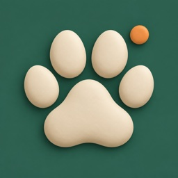

Hjelp med LeashBoard
Sist oppdatert 27. september 2026 · English below
LeashBoard fordeler hundeturene i familien med en turnus, viser hvem som faktisk gikk, og gjør det litt gøyere med poeng og badges.
Trenger du hjelp? Send en e-post til eiriklie@hotmail.com. Skriv gjerne hva du prøvde å gjøre, og hvilken iPhone og iOS-versjon du har.
Vanlige spørsmål
Hvordan kommer familien i gang?
Én lager flokken med hunden i appen. Under Flokken kan du invitere de andre med en kode som KAOS-1234. Koden virker for én person i 7 dager. Barn og andre uten telefon kan legges inn som profil uten telefon.
Hvordan setter vi opp turnusen?
Under Flokken → Turnus velger dere tidene for turene (for eksempel morgen, ettermiddag og kveld) og hvem som har hvilken dag. Turnusen kan gå hver uke eller annenhver uke. Vil dere bare logge turer uten turnus, velg Bare logging.
Hvordan registrerer jeg en tur?
Trykk Start tur på Hjem. Appen tar opp ruta med GPS, også med låst skjerm, og henter været. Turen lagres på telefonen underveis, så den overlever at appen lukkes eller at du mister nettet. De andre ser at du er ute.
Jeg glemte å starte turen. Hva gjør jeg?
Åpne Turer og trykk + for å føre inn turen i ettertid. En tur uten GPS må godkjennes av en annen i flokken, og godkjennes av seg selv etter 12 timer.
Når får jeg påminnelser?
Du får en påminnelse 30 minutter før din tur går ut, hvis ingen har gått ennå. Er noen ute med hunden, sendes ingen påminnelse. Tar noen andre turen din, får du beskjed.
Varslene kommer ikke. Hva sjekker jeg?
Sjekk at varsler er slått på for LeashBoard i iOS-innstillingene, og under Min profil i appen (avataren oppe til høyre på Hjem). Der velger du også bjeffelyd for liten, mellomstor eller stor hund, eller vanlig lyd.
Hvordan regnes poengene?
Hver tur gir 10 poeng, pluss ekstra for lange turer, regn eller snø, kulde, varme eller sterk vind, tidlig morgen eller sen kveld, og for å ta en tur for en annen. Poengene og antall turer vises på LeashBoard.
Hvordan fjerner jeg noen fra flokken?
Under Flokken, trykk på medlemmet og velg Fjern fra flokken. Turene de har gått, blir stående som tidligere medlem, så statistikken ikke endres.
Hvordan sletter jeg kontoen min?
Trykk på avataren din oppe til høyre på Hjem, og velg Slett kontoen min. Les mer i personvernerklæringen.
Kan jeg bytte språk?
Appen følger språket på telefonen. Du kan velge språk for LeashBoard alene i iOS-innstillingene under LeashBoard → Språk. Appen finnes på norsk og engelsk.
Personvern
Ingen reklame og ingen sporing. Les hva appen lagrer i personvernerklæringen.
LeashBoard help
Last updated 27 September 2026
LeashBoard shares out the family's dog walks with a schedule, shows who actually walked, and makes it a bit more fun with points and badges.
Need help? Email eiriklie@hotmail.com. It helps to say what you were trying to do, and which iPhone and iOS version you have.
Common questions
How does the family get started?
One person creates the pack with the dog in the app. Under Pack you can invite the others with a code like KAOS-1234. The code works for one person for 7 days. Children and others without a phone can be added as a profile without a phone.
How do we set up the schedule?
Under Pack → Schedule you choose the times for walks (for example morning, afternoon and evening) and who has which day. The schedule can repeat every week or every other week. To just log walks without a schedule, choose Log only.
How do I record a walk?
Tap Start a walk on Home. The app records the route with GPS, also with the screen locked, and gets the weather. The walk is saved on the phone as you go, so it survives the app closing or losing the connection. The others can see that you are out.
I forgot to start the walk. What do I do?
Open Walks and tap + to log the walk afterwards. A walk without GPS must be approved by someone else in the pack, and is approved automatically after 12 hours.
When do I get reminders?
You get a reminder 30 minutes before your walk runs out, if nobody has walked yet. If someone is out with the dog, no reminder is sent. If someone else takes your walk, you are told.
Notifications don't arrive. What should I check?
Check that notifications are on for LeashBoard in the iOS Settings app, and under My profile in the app (your avatar at the top right of Home). That is also where you choose a bark for a small, medium or large dog, or the normal sound.
How are points counted?
Every walk gives 10 points, plus extra for long walks, rain or snow, cold, heat or strong wind, early mornings or late evenings, and for taking a walk for someone else. Points and walks are shown on LeashBoard.
How do I remove someone from the pack?
Under Pack, tap the member and choose Remove from the pack. Their walks stay as a former member, so the statistics do not change.
How do I delete my account?
Tap your avatar at the top right of Home, and choose Delete my account. Read more in the privacy policy.
Can I change the language?
The app follows the phone's language. You can choose a language for LeashBoard alone in the iOS Settings app under LeashBoard → Language. The app is available in English and Norwegian.
Privacy
No ads and no tracking. See what the app stores in the privacy policy.